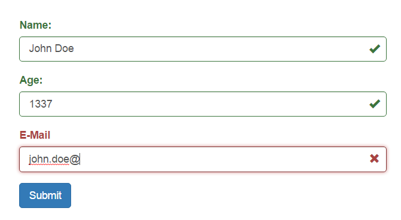
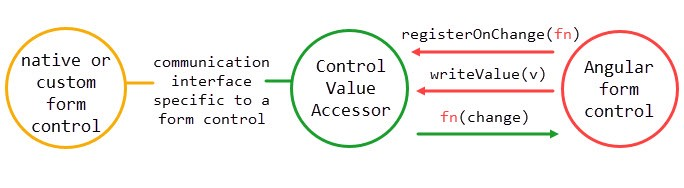
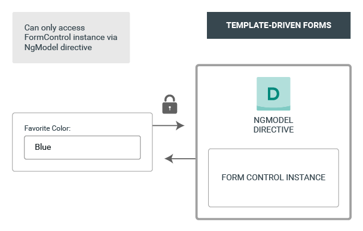
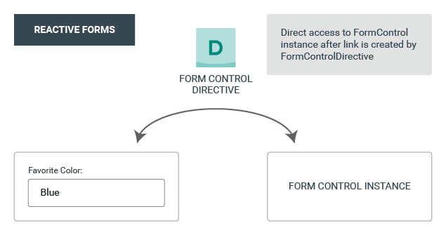

| Template-driven Forms | Reactive Forms | Signal Forms | |
|---|---|---|---|
| Form model | Implicit (template) | Explicit (component) | Explicit (component) |
| Data flow | Asynchronous, two-way binding | Synchronous, explicit binding | Synchronous, explicit binding |
| Status | Legacy - backup ↓ | Legacy - backup ↓ | Current standard |
| API | ngModel / ngModelGroup |
FormGroup / FormControl |
signal() + form() |
All three approaches keep an underlying form model - they differ in where it's declared and how the view and model stay in sync, not in whether a model exists at all.
The Reactive Forms and Template-driven Forms take on each topic lives as a backup slide ↓ beneath the matching Signal Forms slide.
| Template-driven Forms | Reactive Forms | Signal Forms | |
|---|---|---|---|
| Form model | HTML template | Defined in a component | Defined in a component |
| Data model | Unstructured | Structured | Structured (typed) |
| Predictability | Asynchronous | Synchronous | Synchronous |
| Form validation | Directives | Functions | Schema functions |
| Mutability | Mutable | Immutable | Signals (set / update) |
Reactive Forms treat the form model as immutable - a change like setValue replaces the value rather than mutating it in place. Signal Forms keeps that same snapshot semantics, just exposed through signals instead of an AbstractControl tree.
Create one signal that holds the data model
interface LoginData {
email: string;
password: string;
}
@Component({
...
imports: [FormField],
})
export class App {
loginModel = signal<LoginData>({
email: '',
password: '',
});
loginForm = form(this.loginModel);
onSubmit(event: Event) {
event.preventDefault();
// Perform login logic here
// e.g., await this.authService.login(credentials);
}
}
Backup - same point, Reactive Forms flavour.
Build the FormGroup-FormControl tree in code
const contactForm = new FormGroup<ContactFormType>({
name: new FormGroup<NameFormType>({
first: new FormControl('Juana'),
last: new FormControl('Garcia')
}),
email: new FormControl('')
});
// types used above
interface ContactFormType {
name: FormGroup<NameFormType>;
email: FormControl<string | null>;
}
type NameFormType = {
first: FormControl<string | null>;
last: FormControl<string | null>;
};
Backup - same point, Reactive Forms flavour, via FormBuilder.
... creates the same FormGroup-FormControl tree
interface ContactFormType {
name: FormGroup<NameFormType>;
email: FormControl<string | null>;
}
type NameFormType = {
first: FormControl<string | null>;
last: FormControl<string | null>;
};
@Component({ ... })
export class FormTestComponent implements OnInit {
contactForm: FormGroup;
constructor(private formBuilder: FormBuilder) { }
ngOnInit(): void {
this.contactForm = this.formBuilder.group({
name: this.formBuilder.group({
first: "Juana",
last: "Garcia",
}),
email: "",
});
}
}
Backup - same point, Template-driven Forms flavour.
The form model is defined inside the HTML template
<form #contactForm="ngForm" (ngSubmit)="submit(contactForm.value)">
<div ngModelGroup="name">
<label for="first">First Name</label>
<input type="text" name="first" ngModel>
<label for="last">Last Name</label>
<input type="text" name="last" ngModel>
</div>
<label for="email">E-Mail</label>
<input type="text" name="email" ngModel>
<button type="submit">Submit</button>
</form>
{ name: { first: string, last: string }, email:string }
<input type="email" [formField]="loginForm.email" />
<input type="password" [formField]="loginForm.password" />
Backup - same point, Reactive Forms flavour.
<form [formGroup]="contactForm" novalidate>
<div formGroupName="name">
<div>
<label>First Name</label>
<input type="text" formControlName="first">
</div>
<div>
<label>Last Name</label>
<input type="text" formControlName="last">
</div>
</div>
<div>
<label>E-Mail</label>
<input type="email" formControlName="email">
</div>
<button type="submit">Submit</button>
</form>
[formGroup]="contactForm" binds upper FormGroupformGroupName binds child FormGroupformControlName binds child FormControlBackup - same point, Template-driven Forms flavour.
<input name=first ngModel>creates property inside forms data model with key 'first'
<input name=first [ngModel]="varName">creates one-way binding - binds a default value
<input name=first [(ngModel)]="varName">
<input name=first [ngModel]="varName" (ngModelChange)="varName=$event">
creates two-way binding. Note: state at two places (component member and forms model)
<div ngModelGroup=group></div>creates nested object called group inside forms data model (form.value)
Validation rules live in a schema function passed to form()
loginForm = form(this.loginModel, (path) => {
required(path.email, { message: 'Email is required' });
email(path.email, { message: 'Enter a valid email address' });
});
Every field exposes its state as signals:
<input type="email" [formField]="loginForm.email" />
@if (loginForm.email().touched() && loginForm.email().invalid()) {
<span class="error">{{ loginForm.email().errors()[0].message }}</span>
}
Backup - same point, Reactive Forms flavour.
... in Reactive Forms
this.contactForm = this.formBuilder.group({
name: this.formBuilder.group({
first: "Juana",
last: ["Garcia", Validators.required],
}),
email: ["", Validators.email],
});
FormControl and FormGroup both extend AbstractControlvalueChanges and statusChanges provide ObservablesFormControl has single controls statusFormGroup has aggregated status of child controlsCustom errors behave just like built-in ones - read via getError():
<div
*ngIf="contactForm.controls.name.controls.first.getError('forbiddenName')">
The name is not allowed.
</div>
Backup - same point, Template-driven Forms flavour.
... in Template-driven Forms
<input name=otto ngModel required minlength=4 maxlength=24>
<form #form=ngForm>
<input name=otto ngModel required>
<div *ngIf=form.controls.otto.errors>
<div [hidden]="!form.controls.otto.errors.required">
<span>Otto is really important!</span>
</div>
</div>
</form>
form and ngModelGroup aggregate underlying controls (combined errors)
A plain native <input> already gets custom validation:
loginForm = form(this.loginModel, (path) => {
// custom rule: return an error object, or null when valid
validate(path.website, ({ value }) => {
return value().startsWith('https://')
? null
: { kind: 'https', message: 'URL must start with https://' };
});
});
<input [formField]="loginForm.website" />The field (native here) does nothing - the schema owns the rule. Error shape is always { kind, message? }; all rules run, no short-circuit.
Wrap validate() in a function - now it's used like a built-in:
function requireHttpsUrl(path: SchemaPath<string>, opts?: { message?: string }) {
validate(path, ({ value }) =>
value().startsWith('https://')
? null
: { kind: 'httpsUrl', message: opts?.message ?? 'Use https://' });
}
form(this.model, (path) => requireHttpsUrl(path.website));
Cross-field rules read another field via valueOf() - and re-run reactively:
validate(path.confirmPassword, ({ value, valueOf }) =>
value() === valueOf(path.password)
? null
: { kind: 'passwordMismatch', message: 'Passwords do not match' });
Conditional? Gate a rule with the when option, or groups of rules with applyWhen().
Backup - the ValidatorFn contract behind both CVA flavours below.
interface ValidatorFn {
(c: AbstractControl): {
[key: string]: any;
} | null;
}
ValidatorFn takes an AbstractControl to validate.
Returns null if valid.
Returns {[key: string]: any} as error definition.
Backup - same point, Reactive Forms flavour.
A ValidatorFn is already reusable - attach it to any control; cross-field = a validator on the FormGroup:
// reusable custom validator - a plain ValidatorFn, drop it on any control
function requireHttpsUrl(c: AbstractControl): ValidationErrors | null {
return c.value?.startsWith('https://') ? null : { httpsUrl: true };
}
// cross-field: validate the group, not a single control
function rangeOrder(g: AbstractControl): ValidationErrors | null {
const { from, to } = g.value;
return isBefore(from, to) ? null : { rangeOrder: true };
}
new FormGroup({
website: new FormControl('', [requireHttpsUrl]),
slot: new FormGroup(
{ from: new FormControl(''), to: new FormControl('') },
{ validators: [rangeOrder] },
),
});
<input formControlName="website">Backup - same point, Template-driven Forms flavour.
One NG_VALIDATORS directive = a reusable custom validator; the same pattern on an ngModelGroup gives cross-field:
@Directive({
selector: '[requireHttpsUrl]',
providers: [{ provide: NG_VALIDATORS, useExisting: RequireHttpsUrl, multi: true }],
})
export class RequireHttpsUrl implements Validator {
validate(c: AbstractControl): ValidationErrors | null {
return c.value?.startsWith('https://') ? null : { httpsUrl: true };
}
}
@Directive({
selector: '[rangeOrder]',
providers: [{ provide: NG_VALIDATORS, useExisting: RangeOrder, multi: true }],
})
export class RangeOrder implements Validator {
validate(g: AbstractControl): ValidationErrors | null {
const { from, to } = g.value;
return isBefore(from, to) ? null : { rangeOrder: true };
}
}
<input name="website" ngModel requireHttpsUrl>
<div ngModelGroup="slot" rangeOrder>
<input name="from" ngModel>
<input name="to" ngModel>
</div>
Backup - same point, Template-driven Forms flavour, step by step.
Adding custom validators to Template-driven Forms via Directives
<input type="text" name="first" ngModel noForbiddenName>NG_VALIDATORS dependency via providers property (directive meta data)validate() for directive and call validator - e.g. forbiddenNameValidatorBackup - same point, Template-driven Forms flavour, full code.
@Directive({
selector: '[noForbiddenName][ngModel],[noForbiddenName][formControl],[noForbiddenName][formControlName]',
providers: [{
provide: NG_VALIDATORS,
useExisting: forwardRef(() => ForbiddenNameValidator),
multi: true
}]
})
export class ForbiddenNameValidator implements Validator {
validator = forbiddenNameValidatorFn;
validate(c: FormControl) {
return this.validator(c);
}
}
| Form Type | Custom Control Interface | Available Since |
|---|---|---|
| Template-driven Forms | ControlValueAccessor (CVA) |
Angular 2 |
| Reactive Forms | ControlValueAccessor (CVA) |
Angular 2 |
| Signal Forms | FormValueControl / FormCheckboxControl |
Angular 21 (experimental), stable since Angular 22 |
Signal Forms does not reuse CVA - [formField] detects these new interfaces directly, no NG_VALUE_ACCESSOR / forwardRef required.
The Reactive Forms and Template-driven Forms rows share one interface - ControlValueAccessor - so the CVA take on each topic lives as a backup slide ↓ beneath the matching Signal Forms slide.
[formField] is a single directive matched by attribute selector - it decides at runtime what it's sitting on:
<input type="email" [formField]="loginForm.email" />
<input type="password" [formField]="loginForm.password" />
@Directive({ selector: '[formField]', exportAs: 'formField' })
export class FormField<T> {
readonly field = input.required<Field<T>>({ alias: 'formField' });
ɵngControlCreate(host: ControlDirectiveHost): void {
if (this.controlValueAccessor) {
this.ɵngControlUpdate = cvaControlCreate(host, this); // reactive-forms interop
} else if (host.customControl) {
this.ɵngControlUpdate = customControlCreate(host, this);
} else if (this.elementIsNativeFormElement) {
this.ɵngControlUpdate = nativeControlCreate(host, this);
}
}
}
Same directive, same [formField] binding - only the wiring function underneath changes.
Backup - same point, CVA flavour.
Several directives can match the same formControlName/ngModel - Angular picks exactly one value accessor:
function selectValueAccessor(dir, accessors) {
if (customAccessor) return customAccessor; // your CVA component
if (builtinAccessor) return builtinAccessor; // Checkbox/Select/Number/...
return defaultAccessor; // plain <input>
}
Same idea as host.customControl - custom wins, then the closest built-in match, then the plain default.
Signal Forms calls this internally for native fields:
export function nativeControlCreate(
host: ControlDirectiveHost,
parent: FormField<unknown>,
): () => void {
// ... reads/writes the DOM element's value ...
host.listenToDom('input', () => parser.setRawValue(undefined));
host.listenToDom('blur', () => parent.state().markAsTouched());
parent.registerAsBinding();
return () => { /* keep the DOM in sync on every field update */ };
}
A native control offers you functions like...
loginForm.email().touched(); // read
loginForm.email().markAsTouched(); // write
loginForm.email().invalid();
loginForm.email().errors();
interface FormValueControl<T> {
value: ModelSignal<T>; // required
touched?: InputSignal<boolean>; // read touched back, e.g. for styling
touch?: OutputRef<void>; // report a blur, marks the field touched
disabled?: InputSignal<boolean>;
invalid?: InputSignal<boolean>;
errors?: InputSignal<readonly ValidationError[]>;
// ... more optional state, see FormUiControl
}
interface FormCheckboxControl {
checked: ModelSignal<boolean>; // required - mutually exclusive with 'value'
// ... same optional FormUiControl state as above
}
Backup - for participants still on Reactive Forms / Template-driven Forms.
Full ControlValueAccessor API, implementation & exercises: see the Advanced Forms module
ControlValueAccessor Interface
interface ControlValueAccessor {
// model -> view: write a new value into the DOM element
writeValue(obj: any): void;
// view -> model: register the callback to call on input
registerOnChange(fn: any): void;
// register the callback to call on blur ("touched")
registerOnTouched(fn: any): void;
// enable/disable the DOM element
setDisabledState?(isDisabled: boolean): void;
}
Source: @angular/forms - control_value_accessor.ts
app-time-picker
hh:mm am/pm (e.g. 09:00 am)app-time-picker
interface Time { hours: number; minutes: number; period: 'am' | 'pm'; }
export class TimePicker implements FormValueControl<Time> {
value = model<Time>({ hours: 9, minutes: 0, period: 'am' });
protected setHours(hours: number) { this.rawValue.update(v => ({ ...v, hours })); }
protected setMinutes(minutes: number) { this.rawValue.update(v => ({ ...v, minutes })); }
protected setPeriod(period: 'am'|'pm') { this.rawValue.update(v => ({ ...v, period })); }
}
<div>
<!--hours-->
<input type="number" [value]="value().hours" (input)="setHours(($event.target).value)" />
<span>:</span>
<!--minutes-->
<input type="number" [value]="value().minutes" (input)="setMinutes(($event.target).value)" />
<!--am/pm-->
<select [value]="value().period" (change)="setPeriod(($event.target).value)">
<option value="am">am</option>
<option value="pm">pm</option>
</select>
</div>
DefaultValueAccessor: How <input> Connects
@Directive({
selector:
'input:not([type=checkbox])[formControlName],
input:not([type=checkbox])[formControl],
input:not([type=checkbox])[ngModel], ...',
host: {
'(input)': '_handleInput($any($event.target).value)',
'(blur)': 'onTouched()',
},
providers: [DEFAULT_VALUE_ACCESSOR],
})
export class DefaultValueAccessor extends BaseControlValueAccessor
implements ControlValueAccessor { ... }
input / textarea bound via ngModel / formControl / formControlNameinput event - handled here, not by your componentwriteValue & Registering Callbacks
// DefaultValueAccessor
writeValue(value: any): void {
const normalizedValue = value == null ? '' : value;
this.setProperty('value', normalizedValue); // model -> view
}
_handleInput(value: any): void {
this.onChange(value); // view -> model
}
// BaseControlValueAccessor
registerOnChange(fn: (_: any) => {}): void { this.onChange = fn; }
registerOnTouched(fn: () => void): void { this.onTouched = fn; }
This exact writeValue / registerOnChange pattern is what CVA-based custom fields need to implement.
Backup - legacy diagram, CVA flavour.
CVA is an interface that acts as a bridge between the Angular forms API and a native element in the DOM. It propagates changes from the model to the view, and from the view to the model.

Backup - legacy diagram, Template-driven Forms flavour.

Backup - legacy diagram, Reactive Forms flavour.

app-time-picker
meetingForm = form(this.model, (path) => {
validate(path.time, ({ value }) => {
const minutes = toMinutes(value());
if (minutes < OPENING) return { kind: 'min', message: 'Please select a time after 09:00 am' };
if (minutes > CLOSING) return { kind: 'max', message: 'Please select a time before 05:00 pm' };
return null;
});
});
Anti-pattern: an isValid() inside the control. Define rules in the schema; let the control render the result.
Backup - same point, CVA flavour.
Under CVA a self-validating control registers NG_VALIDATORS and contributes to its own errors - idiomatic, Angular Material does it:
@Directive({
providers: [{ provide: NG_VALIDATORS, useExisting: RatingInput, multi: true }],
})
class RatingInput implements ControlValueAccessor, Validator {
validate(c: AbstractControl) { return c.value >= 1 ? null : { min: true }; }
}
Signal Forms has no NG_VALIDATORS equivalent - see the error-channel slide.
Backup - CVA flavour: both sides validate.
The host can add its own validators - they run in addition to the control's internal ones:
// reactive: control self-validates (min 1) + host adds more
new FormControl('', [Validators.required, maxRating(10)]);
<!-- template-driven: extra validator directives on the same element -->
<app-rating-input name="rating" ngModel required maxRating></app-rating-input>
NG_VALIDATORS is a multi-provider - Angular composes all of themcontrol.errors is the merged result (collision = same error key wins/overwrites)This two-sided validation is exactly what Signal Forms drops - there the control contributes no validators (bar parse errors); all of it lives in the schema.
app-time-picker
export class TimePicker implements FormValueControl<Time> {
value = model<Time>({ hours: 0, minutes: 0, period: 'am' });
invalid = input(false);
errors = input<ValidationError[]>()
[...] // parsing into hours, minutes, and period signals
}
<div>
<!--hours-->
<input/>
<span>:</span>
<!--minutes-->
<input/>
<!--am/pm-->
<input/>
</div>
@if({ invalid() }) {
<div>{{ errors()[0].message }}</div>
}
app-time-picker
export class TimePicker implements FormValueControl<Time> {
value = model
Parsing is the excemption of 'schema validates, control displays' - it means that the control is responsible for ensuring the raw value can be parsed into a valid typed value, while the schema handles the business rules and overall validation logic. This time parsing example is on the line between being purely presentational and fully validating the input against business rules. But if for example the time value is later used to construct a Date object, having actual time numbers is part of the intrinsic parsing not the business requirements.
Backup - same point, CVA flavour.
app-time-picker
@Component({
selector: 'app-time-picker',
providers: [
{ provide: NG_VALUE_ACCESSOR, useExisting: forwardRef(() => TimePickerComponent), multi: true },
{ provide: NG_VALIDATORS, useExisting: forwardRef(() => TimePickerComponent), multi: true },
],
})
export class TimePickerComponent implements ControlValueAccessor, Validator {
[...] // splitting into hours, minutes, period
// self validating, adding errors if the time format is incorrect
// not restricted to parsing only
validate(c: AbstractControl): ValidationErrors | null {
return isValidClock(c.value) ? null : { clock: true };
}
}
Idiomatic under CVA: the control contributes to its own errors via NG_VALIDATORS.
Input and Ouput are setup accordingly by the interfaces
| form → control (in) | control → form (out) |
|---|---|
errors(), invalid() | value (model) |
touched, disabled, required/min/max/... | touch (output) |
parse errors via transformedValue |
Allow reusable schemas to be defined once and applied across multiple forms.
export const businessHoursSchema = schema
// any host - one line, no re-implementation, nothing to compose on top
signupForm = form(this.model, (path) => {
apply(path.time, businessHoursSchema);
});
Backup - same point, CVA flavour.
CVA doesn't need a companion-schema-style reuse mechanism as badly:
Without the schema validates, control displays split forcing rules out of the class, self-validation is allowed. The validation can be shipped with the custom field itself.
If the validation has to be used with differenct custom CVA based fields, a Validator function can be exported and reused across multiple CVA host.
app-time-range-picker
from and a tohh:mm am/pm timefrom must be strictly before to - otherwise show an errorapp-time-range-picker
interface TimeRange { from: Time; to: Time; }
@Component({
selector: 'app-time-range-picker',
template: `
<app-time-picker [value]="value().from" (valueChange)="setFrom($event)" />
<app-time-picker [value]="value().to" (valueChange)="setTo($event)" />
`,
})
export class TimeRangePicker implements FormValueControl<TimeRange> {
value = model<TimeRange>({
from: { hours: 9, minutes: 0, period: 'am' },
to: { hours: 5, minutes: 0, period: 'pm' },
});
// reads value().from/to directly - no extra signal needed to stay in sync
protected setFrom(from: Time) { this.value.update(v => ({ ...v, from })); }
protected setTo(to: Time) { this.value.update(v => ({ ...v, to })); }
}
<!-- mounted like any other field - ONE binding, not two -->
<app-time-range-picker [formField]="meetingForm.slot" />
Backup - same point, CVA flavour.
app-time-range-picker
@Component({
providers: [
{ provide: NG_VALUE_ACCESSOR, useExisting: forwardRef(() => TimeRangePickerComponent), multi: true },
{ provide: NG_VALIDATORS, useExisting: forwardRef(() => TimeRangePickerComponent), multi: true },
],
})
export class TimeRangePickerComponent implements ControlValueAccessor, Validator {
form = new FormGroup({
// each child already has the time-picker's own NG_VALIDATORS
from: new FormControl
Unlike Signal Forms' parse-only upward channel, both levels here are full NG_VALIDATORS contributions.
Backup - CVA-only, no Signal Forms equivalent.
app-time-range-picker - same UI and outcome
@Component({
selector: 'app-time-range-picker',
viewProviders: [{ provide: ControlContainer, useExisting: FormGroupDirective }],
template: `
<ng-container formGroupName="slot">
<app-time-picker formControlName="from" />
<app-time-picker formControlName="to" />
</ng-container>
`,
})
export class TimeRangePickerComponent implements OnInit {
// inject parent in the constructor (this.form = parent)
constructor(private form: FormGroupDirective) {}
ngOnInit() {
// build the form structure in this component (this.form.form.addControl) -
// the host never has to know "slot" has a from/to shape
this.form.form.addControl('slot', new FormGroup({
from: new FormControl(''),
to: new FormControl(''),
}));
}
}
<!-- host owns the root FormGroup only - "slot" is the picker's own business -->
<form [formGroup]="meetingForm">
<app-time-range-picker />
</form>
viewProviders instead of providers: providers cannot reach up to the parent. No CVA, no composite value - just template reuse.
app-time-range-picker
// shipped alongside the control — the intrinsic "from < to" rule, not a business rule
export const timeRangeSchema = schema((path) => {
validateTree(path, (ctx) => {
const { from, to } = ctx.value();
return toMinutes(from) < toMinutes(to)
? null
: {
kind: 'rangeOrder',
message: 'Start must be before end',
fieldTree: ctx.fieldTree.to, // attach the error to "to", not the whole range
};
});
});
meetingForm = form(this.model, (path) => {
apply(path.slot, timeRangeSchema);
});
This exercise project has been iteratively upgraded from Angular 7 to Angular 22 rather than rewritten from scratch - it still follows the classic NgModule structure end to end.
Standalone components are Angular's modern default, and the Signal Forms exercises lean on them for new fields - but standalone and NgModule interop freely, so this isn't a conflict you need to resolve.
The next few slides cover what that means in practice while you work through the exercises.
NgModules are not deprecated - standalone is only the new default for new code, not a replacement requirement for existing apps.
This app still bootstraps the classic way:
platformBrowser().bootstrapModule(AppModule)
.catch(err => console.error(err));
Feature areas stay organized as NgModules (BookModule, SharedModule, ...) with their own declarations/imports/exports.
A standalone component can be imported straight into an NgModule's own imports array - not declarations:
@NgModule({
imports: [SomeStandaloneWidgetComponent],
declarations: [BookOverviewComponent],
})
export class BookModule {}
The reverse works too - a standalone component lists whichever NgModules it needs in its own imports:
@Component({
selector: 'app-some-standalone',
imports: [MatFormFieldModule, MatInputModule],
})
export class SomeStandaloneComponent {}
ng generate component already does the right thing here - no extra flag needed:
"schematics": {
"@schematics/angular:component": { "standalone": false }
}
So ng g c customized-select-box generates standalone: false automatically, matching every existing component (e.g. AppComponent) - still double-check it landed in the declarations of the module you intended.
Heads-up: existing templates (book-overview, book-details, ...) still use the legacy *ngIf/*ngFor structural directives, not the modern @if{}/@for{} control-flow syntax. Both work side by side in the same app - use whichever you like in new template code, there's no need to migrate what's already there.
app-customized-select-box
Extend the book form with a genre picker - a dropdown showing an icon and name, backed by a new /api/genres endpoint.
Before you start: two forms "worlds"
Angular has two different form APIs: the classic Reactive Forms (FormGroup) and the newer Signal Forms (form(), [formField]). A control built for one doesn't automatically plug into the other - think of it as two different plug shapes.
book-details's form (bookForm) happens to be built with Reactive Forms:
bookForm.That adapter has a name - SignalFormControl - and it's one extra step, shown where it's needed in the Signal Forms track below. Nothing to prepare now, just know it's coming.
Exercise (1/5)
server/book-genres.json ({"id": 1, "name": "IT", "icon": "code"}, ...) - no need to create a new file, just read and return itExercise (2/5)
Exercise (3/5)
Jump to the flavor-specific steps: Signal Forms · CVA
book-details - that's the only book form in this starterSignal Forms flavour · Exercise (4/4)
FormValueControl<Genre> on CustomizedSelectBox
value = model<Genre | null>(null)touch = output<void>(), emit it on blur / when the panel closesgenres (list) and placeholder as input()s(selectionChange) on mat-select to value.set($event.value)NG_VALUE_ACCESSOR, no module wiring beyond the usual standalone importsThe adapter from before you start, in code: genre = new SignalFormControl<Genre | null>(null, p => required(p)), then bookForm.addControl('genre', this.genre), then mount with [formField]="genre.fieldTree" instead of bookForm.genre.
Backup - same point, CVA flavour.
Exercise (4/5)
Backup - same point, CVA flavour.
Exercise (5/5)
app-address
Build a reusable address field (street, zip code, city, all required) and mount it inside the Personal Information form.
The starter already ships app-personal-info-overview (route /personal-info) as the host for this exercise.
Before you start: two forms "worlds" (the other way round)
Same idea as the genre picker, flipped: this time the host page, personal-info-overview, is built with Signal Forms (form()) instead of Reactive Forms.
FormValueControl) → it plugs straight in via [formField] - this page's native language.That adapter is called compatForm - shown where it's needed in the CVA backup steps below. Together with the genre picker's SignalFormControl, these two exercises cover both directions of Signal Forms ↔ Reactive Forms compatibility.
Exercise (1/3)
FormValueControl<Address>value = model<Address>({ street: '', zipCode: '', city: '' })value.update(v => ({ ...v, street: $event })) (and so on)Exercise (2/3)
addressSchema = schema<Address>((path) => { ... })required(path.street, ...), required(path.zipCode, ...), required(path.city, ...)NG_VALIDATORS, no validate() method on the component - the schema owns the rulesExercise (3/3)
PersonalInfoOverviewComponent, apply the schema and mount the field
address: Address field to its PersonalInfo model (with a default value) - the component already has a commented-out slot for itpersonalInfoForm = form(this.model, (path) => apply(path.address, addressSchema));<app-address [formField]="personalInfoForm.address" /> - one binding, no isParentSubmitted workaroundpersonalInfoForm().markAsTouched() reveals every error at onceBackup - same point, CVA flavour.
Exercise (1/5)
Backup - same point, CVA flavour.
Exercise (2/5)
Backup - same point, CVA flavour.
Exercise (3/5)
{
provide: NG_VALIDATORS,
useExisting: forwardRef(() => AddressComponent),
multi: true
}
Backup - same point, CVA flavour.
Exercise (4/5)
Object.keys(this.form.controls).forEach(key => {
this.form.get(key).markAsTouched();
});
Backup - same point, CVA flavour.
Exercise (5/5)
FormControl inside the component's model signalThe adapter from before you start, in code: wrap the model with compatForm instead of form so a plain FormControl can live inside it as a leaf, then mount <app-address [formControl]="model().address" [isParentSubmitted]="submitted" /> exactly as CVA expects.
order-overview → general-info
Build an order form whose nested general-info component injects its own fields directly into the parent's FormGroup via ControlContainer.
CVA-only pattern - no Signal Forms equivalent (composite values there are just nested signal slices, see the Time-Range-Picker).
Exercise (1/3)
Exercise (2/3)
Exercise (3/3)